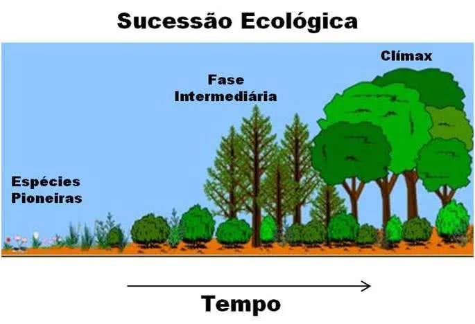

A sucessão ecológica é o processo gradual de mudanças da estrutura e composição de uma comunidade ela representa um processo ordenado de mudanças no ecossistema, incluindo alterações no ambiente físico pela comunidade biológica, até alcançar o fase de clímax.
A sucessão ecológica passa por três fases: a ecese, seral e clímax.
Primeira fase: Ecese
A ecese representa a comunidade pioneira.
São os primeiros organismos a se instalarem no ambiente, como líquens, gramíneas e insetos.
Segunda fase: Seral
A seral é a comunidade intermediária. Representada pela vegetação de pequeno porte, arbustiva e herbácea.
Nessa fase ocorrem mudanças significativas na comunidade.
Terceira fase: Clímax
A última fase é o clímax, a comunidade estabilizada
A comunidade atinge elevado número de espécies, os nichos ecológicos são ocupados e apresenta grande quantidade de biomassa.
A comunidade tende a evoluir até clímax, quando é formada por populações em equilíbrio com o meio.
